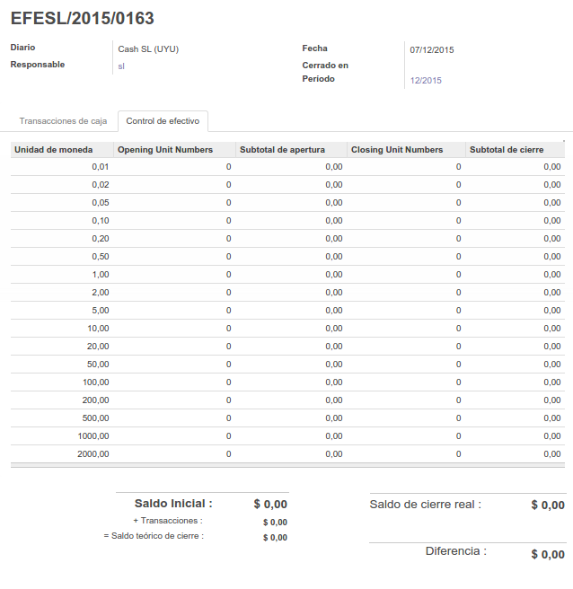

<section class="oe_container">
    <div class="oe_row oe_spaced">
        <div class="oe_span12">
            <h2 class="oe_slogan">Cash Control</h2>
            <h3 class="oe_slogan">Chequeo de importe en transacciones</h3>
        </div>

        <div class="oe_span6">
            <div class="oe_demo oe_picture oe_screenshot">
                    
            </div>
        </div>

        <div class="oe_span6">
            <p class='oe_mt32'>
Este modulo agrega un nuevo punto de control en los chequeos de cierre de caja.
Si el valor de cierre de caja no se condice con el saldo teorico de cierre, el cual sale de saldo inicial + transacciones, se yergue un mensaje.
            </p>
<!--            
            <div class="oe_centeralign oe_websiteonly">
                <a href="http://www.openerp.com/start?app=stock" class="oe_button oe_big oe_tacky">testestestestestestest</a>
            </div>
-->
        </div>
    </div>
</section>
